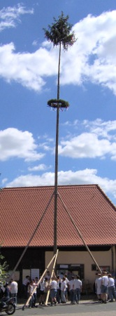

Kirchweih in Wernsbach
Alle Jahre im Juni heißt es wieder:
Die Kerwa is kumma, die Kerwa is do, die Aldn die brumma, die Junga sen froh.
Das ganze Dorf ist im Ausnahmezustand, Verwandte und Bekannte kommen von fern und nah um das Fest mitzufeiern. Bier rinnt in Strömen durch die Kehlen und die Wirte machen das Geschäft des Jahres. Aber was passiert eigentlich genau auf der Kirchweih? Welche Bräuche gibt es, worin liegen ihre Wurzeln?
Kirchweihen
Gedenktage der Kirchenweihe gibt es schon seitdem die ersten Kirchen gebaut wurden. Doch schon bald nahm das rein kirchliche Fest immer weltlichere Züge an. Märkte und Messen wurden abgehalten, neue Kleider wurden angeschafft, damit man sich sehen lassen konnte, wenn die Verwandtschaft zum festlichen Schmaus kam. In Wernsbach wird eine Kirche erstmals 1168 erwähnt. Unsere Kirche wurde im Laufe der Zeit erst der heiligen Maria, dann St. Nikolaus und seit 1717 Johannes dem Täufer geweiht. Daher ist anzunehmen, dass sich auch der Kirchweihtermin immer wieder änderte. Heute wird die Kirchweih am Sonntag vor Johanni, dem 24. Juni gefeiert.
Bräuche
Aus unserem Ort sind einige alte Bräuche überliefert. Früher wurde am Giebel vom Gasthaus zur Linde eine Birke aufgestellt. Die Sitte des "Kerwaier Ein- und Ausgrabens" kam Anfang des 20. Jahrhunderts aus anderen Dörfern nach Wernsbach. Ganz wichtig war früher das Tanzen. Eine Blaskapelle spielte im Saal vom Gasthaus Veit zum Tanz. Vieles ging aber durch Krieg, Armut oder weil man es für überkommen hielt in Vergessenheit. In anderen fränkischen Dörfern gibt es übrigens diese Bräuche z.T. heute noch. Andere Traditionen, wie das Küchle backen, das Kerwageld oder das Absingen der Kerwaliedli, haben dagegen bis in unsere Zeit Bestand.
Kerwabaum

Ein Kerwabaum wird seit 1986 wieder aufgestellt.
Dieser wird am Freitag von den Kerwabuam aus dem Wald geholt.
Gegen Abend gehts mit Säge, Holzwagen und reichlich Bier in den Gemeindewald um eine
schön gewachsene Fichte zu suchen.
Je höher das Gewächs, desto stolzer sind die Buam.
Oft bricht beim Fällen die Kupf, also die Spitze des Baums ab, so dass meistens zwei
oder drei Bäume gefällt werden müssen bis ein Passender gefunden ist.
Die Fichte wird per Muskelkraft auf den Holzwagen gebracht und einen sicheren Ort gefahren
um sie vor der Zerstörung durch auswärtige Burschen zu schützen.
Danach gehts zum "angenehmen Teil" im Wirtshaus über wo bei Brotzeit, Bier
und schwarzen Maßen lauthals gesungen wird.
Noch nicht wirklich von den Strapazen des Vorabends erholt trifft man sich am
Morgen zum Baumschmücken. Es ist noch viel zu tun bis der Baum aufgestellt werden kann.
Junge Birken werden aus dem Wald geholt und damit ein alter Schlepper geschmückt,
lange Holzstangen werden zu sog. Schwalben zum Baum aufstellen gebunden.
Am Nachmittag ist es dann endlich soweit, der Baum wird durchs Dorf gefahren,
die Burschen laufen dabei nebenher und singen bei Blasmusik die Kerwalieder.
Vor der Kirche macht der Zug halt um den Baum aufzustellen.
Danach wird bis spät in die Nacht im Pfarrgarten und den Wirtshäusern gefeiert.
Geschafft
Nach dem Kirchweihgottesdienst am Kerwasonntag gehts zum Frühschoppen.
Abends ist im Pfarrgarten Barbetrieb und gemütliches Beisammensein.
Am Montag findet ebenfalls vormittags ein Frühschoppen und abends Barbetrieb statt.
Derjenige, der an der Kerwa am tiefsten ins Glas geschaut hat wird von
den anderen Kerwabuam zur Kerwasau gemacht. Dazu wird er in einen Brühtrog
gezerrt und mit Bier übergossen. Kandidaten für die Kerwasau gibt es meistens genügend,
oft wissen diejenigen aber schon was ihnen blüht und bleiben daheim.
Denn Kerwasau will keiner gern werden.
....Soodala! Des wars scho widder midd unsrer Kerwa fiä heier. Schood, is vil z'schnell goa gwen. Aber nägschds Joa gibt's ja widder anne. Do kummds dann hald aa mol a weng vorbei und schauds eich des oo!